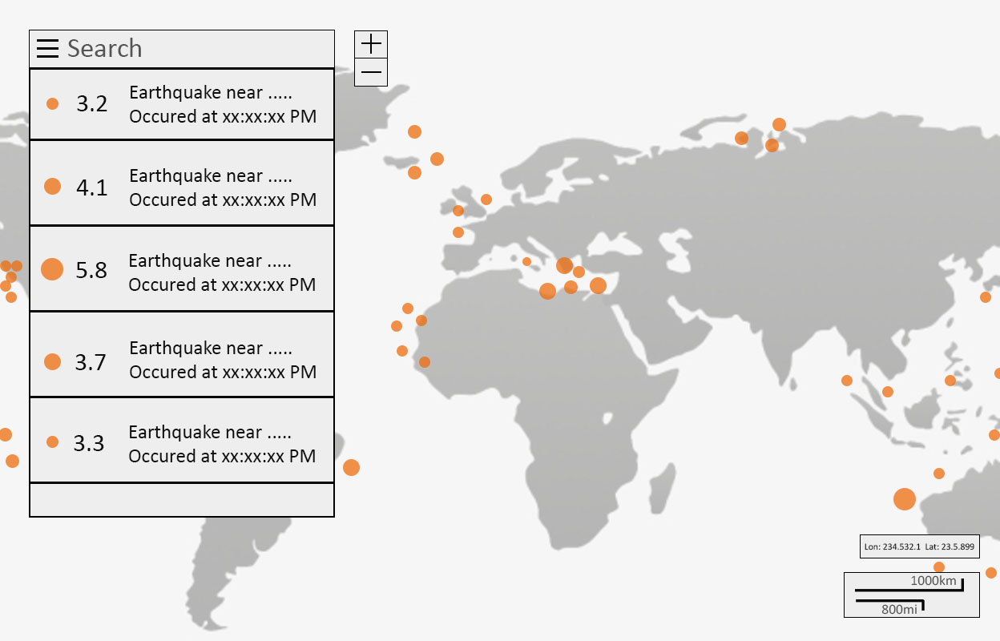

https://www.pinclipart.com/pindetail/ibRRxiJ_epicenter-map-symbol-sign-clipart-circle-png-download/
https://stock.adobe.com/search?k=seismograph&asset_id=94421141
https://bulma.io/documentation/form/general/
https://bulma.io/documentation/helpers/color-helpers/#docsNav
https://www.w3schools.com/html/html_form_input_types.asp
https://www.w3schools.com/css/css_icons.asp
https://www.w3schools.com/howto/howto_js_collapsible.asp
https://css-tricks.com/snippets/css/a-guide-to-flexbox/
https://medium.com/@surbhisoni241/why-css-text-overflow-ellipsis-not-working-968814b43370
https://www.jsdiaries.com/how-to-remove-decimal-places-in-javascript/
https://docs.mapbox.com/mapbox-gl-js/example/geojson-markers/
https://docs.mapbox.com/mapbox-gl-js/style-spec/expressions/
https://docs.mapbox.com/mapbox-gl-js/api/map/#map#removelayer
https://italonascimento.github.io/applying-a-timeout-to-your-promises/
API Home and Documentation: https://earthquake.usgs.gov/fdsnws/event/1/
Endpoints used: https://earthquake.usgs.gov/fdsnws/event/1/query?format=geojson
No API key required!
This application will make use of the USGS EQ Catalog API which has a multitude of data about current and past earthquakes. The API's documentation is here: https://earthquake.usgs.gov/fdsnws/event/1/
The API allows you to query for earthquakes that have occured after or before a given time frame, earthquates within given longitude and latitude constraints, and for earthquakes based on their magnitude, depth, alert level and many other parameters. I plan to use searches based on the earthquakes coordinates to only load earthquakes on the screen that are able to be seen, and refresh the search whenever the user zooms in or out. I will have to optimize the code so that the application is not laggy during this process.
The ability to place the coordinates given by the EQ Catalog API on an interactive map is not a feature contained within the API so I plan to use the Mapbox tool to create a map and texture it and then I will have to use a formula to take longitude and latitude values and convert them to x and y values that Mapbox understands.
